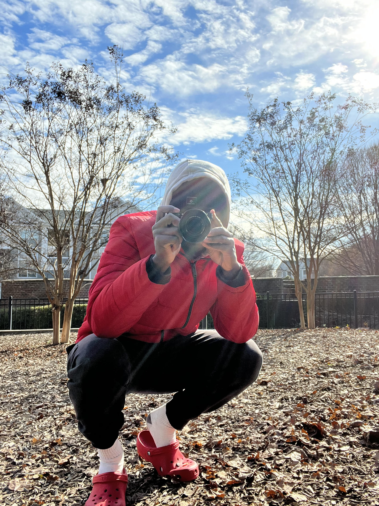

Qon Murphy is a talented photographer who swiftly gained recognition for his unique perspective and artistic vision. With a focus on landscape photography, Qon masterfully captures the beauty of nature, transporting viewers to breathtaking locations through visually stunning images. Driven by a passion for continuous growth, he pushes boundaries, seeking unconventional angles and lighting techniques to create mesmerizing photographs. With several local exhibitions under his belt, Qon is establishing himself as a rising star in the photography community.